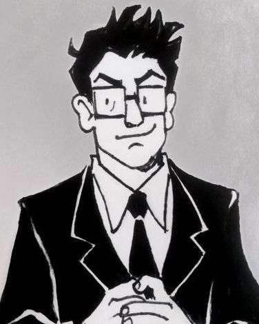

GIANTOPOLIS is a bustling metropolis of millions. Just the sort of place that a young man like York (John F) would come to make his fortune. Yes, he's decided to quit his day job in order to pursue his true passion: supervillainy. If only his ingenious inventions would stop blowing up in his face at inopportune times...
His luck changes when he teams up with childhood friend and mad scientist Xander (John L). Going by the oh-so-generic pseudonyms of John and John, the duo find that their wacky gadgets and plots of mind control are working much better than they'd bargained for. Suddenly, they're targets for every up-and-coming villain and hero in Giantopolis, meeting a cast of characters so strange that they could have crawled out of the songs of.... some other band.
A story inspired by repeated watchings of Birdhouse and a healthy love for cheesy action/scifi tropes.
Alexander "Xander" Lincoln (code name: John X)
Mad scientist with a flair for the dramatic. Classically trained in the sciences, he dropped out of college in his first year, retreating to his basement to invent his own school of mathematics and craft exotic chemicals for fun and profit. The downside to working on the bleeding edge of the scientific method is that his inventions are wildly unpredictable, and when they go wrong even he doesn't know why. Luckily, what Xander's careful calculations can't fix, York's percussive maintenance usually can.
As paranoid as he is curious, he prefers to lay low when it comes to public acts of evil. He tries to keep as healthy of a work-life balance as possible for a busy supervillain, and "John" can sometimes be seen reading at a local coffeeshop between long hours of nefarious doings in the lab.

Newton York (code name: John Y)
Gadgeteer genius with an even worse flair for the dramatic. With his knack for reverse-engineering and hotwiring everything he can get his hands on, he could probably MacGyver his way out of Alcatraz with a toaster, screwdriver, and roll of Scotch tape. He thinks best on his feet, which is a lucky thing: a tendency to not do the math until AFTER he's bolted things together tends to blow up in his face. Literally. Hey, a short sharp shock gives your hair that electrifying look that all the ladies love.
His ambitious rise into the world of villainy has made "John" a minor celebrity of the "people screaming in alarm when you walk down the street" variety, but it's a small price to pay for a job as cool as his. He has BIG plans in store for Giantopolis... as soon as he works out what they are.
Amber Goldberg (code name: "The Robin")
Amateur vigilante with a can-do attitude and homemade wingsuit. She appreciates the guys' DIY approach to world domination, even if her heroic duty is supposed to be to stop them. She's a force to be reckoned with: her wingsuit packs a parachute, several grappling hooks, grippy magnetic gloves and boots, shock absorbers, heelies, and a taser, and it's always getting upgrades. Truly, no job could be more perfect for her theatric sense of style and mostly-unwavering moral compass.
The Deranged Millionare
They say he legally changed his first name to "Deranged" and his last name to "Millionaire" when he first made it big. His one true love is his money, but he insists that his crusade against "John and John" is for the greater good of Giantopolis. People tend to believe him, perhaps because of his charm and respectable good looks, but perhaps because he usually doesn't punctuate these declarations with evil cackling. What a double standard.
Mayor Allen White, steadfast, stiff-shirted figurehead of Giantopolis;
Cap'm Coulton, pal of Mr. Millionaire, noted (former) boat-owner;
Particle Man, a golden-age superhero dragged out of retirement;
The Hotel Detective, a serious, shadowy, tough-on-crime figure;
Too-Tall Girl, a teenager who seems to be taking "growing up" too literally;
Doctor Worm, a hyperintelligent annelid and The Robin's former nemesis;
Flo W, Dan Z, and V3000, three very peculiar henchmen (well, henchwoman, henchman, and hench-bot);
...and who knows who else?
The BoCoBoMo-bile (Boat of Car of Bird of Moth-mobile)
The Johns' primary method of transportation. Originally a (stolen) boat, with each new upgrade this super-tricked-out literally-all-terrain vehicle gets harder to identify (and its acronym harder to say).
Communicator Watches
Fitted with emergency forcefields, holographic projectors, and enough of John X's strange microchips that they can probably talk to aliens now. But as is traditional, they all ring back to a simple rotary phone in the secret lab.
Goo-Guns
An intimidating but (mostly) nonlethal Originally a John Y project, he's refined it with X's help to take cartridges with a variety of effects: quick-hardening glue, knockout gas, slippery nanocoatings, goops, acids, and even stranger experimental concoctions.
Mind Control Spex
A fashionable choice for the modern obedient minion. These pipe in hypnotic tunes through tiny speakers and, like blinkers, keep the wearer calm and happy in their trance. The oversized eyes printed on the front are just for dramatic effect.
Click any image below to see it fullscreen; click anywhere else to escape.


I've now drawn some short comics set (loosely) in the X&Y universe!
Check out my comics page for a more detailed listing, or click on any of the thumbnails below.
Read on for summaries of the first 10 issues that exist only in my heart...
York is getting desperate. He's a missed payment away from eviction and his nighttime escapades as minor villain The White Mask are more dangerous than profitable (his inventions keep on blowing up, shorting out, or catching fire in the middle of a dangerous stunt). So he tracks down the secret basement lab of his high school friend Xander Lincoln and proposes a partnership. Xander is persuaded not by York's pretty speech, but the interesting technical challenge and potentially bottomless research budget. They scheme up a heist for a trial run of their team.

Their target is simple: a small yacht out in the bay, ideal for future modification into a boat-of-carmobile. But first—to steal it!
The boat's passengers are amused and confused when a smartly-dressed and bespectacled young man pulls up alongside in a rowboat, pulls out a tiny and clearly homemade tazergun, and politely invites them to surrender, as they are being boarded. There's a good deal of laughter... until York tells them to turn around and see that Xander has snuck onboard during their distraction and now holds them at the wrong end of a scary-looking science-gun.
Once the passengers are loaded at goo-gun-point into the rickety rowboat, our heroes (or should we say our villains?) speed off triumphantly. Back in the rowboat, the yacht's former cap'm swears revenge.

X and Y have picked an abandoned factory as their secret base, but still need funds and infamy. So they plant strange devices in the seafloor and hijack the airwaves, announcing that if the city doesn't pay up, they, "John and John", will plunge the city beneath the waves.
As floodwaters rise, things begin to go wrong. For one thing, the citizens rich enough to pay the ransom are more than happy to wait it out in their yachts and penthouses. For another, the water is rising faster and faster and they can't control it anymore. While the city desperately tries to scrape up funds in time and the Johns desperately try to maintain a smug public face, they must race against the clock to foil their own plan.
Going down in a submersible, York finds that someone is sabotaging their city-sinking apparatus: a silent, amphibious woman with her own agenda for wanting the city flooded. York destroys their devices but damages the sub in the process. Xander must don SCUBA gear to rescue him from the flooded sub and bring them both back to the surface safely despite the underwater woman's attempts to drag them to a watery grave.
Surfacing, the pair must still must outrun the cops, get to the ransom rendezvous to retrieve it, and announce that the city is saved as smugly and un-exhaustedly as they can. It's a triumph, but a difficult and guilty one for all the damage caused in the process. X and Y conclude that if they're going to continue, they're going to need help.

Late at night, strange music fills the streets of Giantopolis, compelling sleeping figures to rise and follow its source: a lone figure on a bike with a boombox, John X, zipping through town and leading them like the pied piper back to their lair. Yes, X and Y have been working on MIND CONTROL through MUSIC, an old project of York's that Xander has latched onto with enthusiasm.
Outfitted with matching glasses to block out bright lights or familiar faces that could break the mind control, X and Y now have an army of minions to call their own. However, actually *maintaining* healthy and functional henchmen turns out to be quite a chore, and Xander keeps vanishing back into his lab to conduct more unspeakable experiments with synths or saxophones, leaving York to the job of babysitting.
It's running York ragged keeping everyone fed, clothed, and rested, let alone useful to their empire of evil. On top of it all, their demo tapes keep being sent back by prospective distributors who claim their sound is either "too quirky" or "leaves the listener with a sense of existential doom" or other such nonsense. It takes less than 72 hours for York to break down, hand every minion a tape to share with their friends, and shoo them all out the door, begging them to please go home.
Later, York realizes that a few of the minions still haven't left—for various reasons, they have no better home to go back to (and hey, those tunes were pretty catchy). Thus begins their paid employment as roadies of X and Y Evil Industries, helping with upkeep on the lair and the construction of secret tunnels.
Of course, the tapes are still out there, and their effects are insidious. You never know when it'll be useful to ring a bell and have a fraction of the crowd obey your every command...
Xander's getting paranoid. With their new helpers, so many people are coming in and out of their lair that he's decided to build a massive facial-recognition security system around their base to tranquilize and remove unauthorized tresspassers. More bizzarely, he's creating animatronic doubles of himself who wander around the base on timers, doing incomprehensible tasks and answering questions tersely (so really, much like the original Xander).
York is not a fan. He's turned down the offer to have his own robot duplicates, and keeps losing track of which is the real Xander. He laughs it all off as unnecessary paranoia only to step outside and immediately be knocked unconscious and dragged off by *something*... which then merrily enters the base in his place, looking exactly like him.
Not-York explores the base as discreetly as possible, worried by how Xander seems to be everywhere at once. After careful observation, he realizes that they're fakes and uncovers the blueprints for the duo's next project: a massive laser. He's about to steal it when Xander walks in flanked by robot doubles and confronts him, suspicious. In the ensuing scuffle for the blueprints, "Xander" is injured. He is neither the original Xander nor a robot double, but a SECOND shapeshifter trying to infiltrate their base... and, as it turns out, the long-lost brother of the shapeshifter who is impersonating York. A tearful reunion ensues.
The ACTUAL York and Xander then arrive, confused and a little worse for the wear, and a grand chaotic battle ensues, every man against himself. When the shapeshifters are injured enough that they can no longer hold their disguise, the security system kicks in and expels the intruders. They swear revenge, but X and Y aren't concerned. They've heard that one plenty of times before.

John Y is pitching their next threat to the city (a massive laser, mounted high enough to burn every penthouse suite and CEO headquarters in town) from a suitably dramatic perch atop a suspension bridge when he gets a surprise: someone else has climbed up to challenge him. It's The Robin, amateur agent of justice, with her impressive homemade wingsuit. They exchange witty repartee, York jumps off the bridge and onto the waiting Boat of Car of Bird-mobile (it can fly now) and tells Xander to floor it, and a chase ensues.
They get away, but this stunt gets Robin recruited by a newly-formed League of Heroes, a loose team financially backed by Giantopolis' disgruntled upper crust. The League includes two familiar shapeshifters, an angry Cap'm, a rogue hotel detective, and even the legendary Particle Man, out of retirement to fight the growing villainous menace of the Johns.
Meanwhile, York is smitten with his new "nemesis". Main plot abandoned, he convinces Xander to pull dangerous stunts like attatching a giant robot arm to the BoCoBmobile and driving it through the city, only to run off so he can duel The Robin one-on-one when the League arrives. These hero vs. villain battles cause plenty of mayhem, which of course is blamed on our villains no matter who perpetrated it.
Amber notices John Y's attentions, and pitches a less destructive plan to the League: if she can talk him into inviting her back to the lair, she can disable their laser and steal information on their future plans.
It works like a charm. She simply knocks on the front door and John Y welcomes her in like a gentleman. They have a nice date and (despite John X watching her like a hawk) she manages to get everything she needs by the time she leaves (plus York's personal phone number).
The League is delighted. They can't wait to destroy the Johns once and for all, to restore peace to the city. But Amber is having second thoughts. Though the Johns are the "bad guys", she argues, they're not BAD guys. They're a lot like the superheroes, really: melodramatic, overpowered, and trying to change the world. When she draws this comparison, things get ugly. She decides not to give the League the information and instead flees, calling York for backup.
X and Y find Amber just as the League does, starting a fight that leaves John Y and Amber trapped under a failing forcefield beneath a collapsing building. Amber calls for help from the League and York calls for help from Xander, and Amber apologizes for taking advantage of him. It's Xander who actually saves them as the arm on the BoCoBmobile finally comes in handy to get them out in the nick of time.
Disillusioned with the League of Superheroes for seeming so willing to leave her and York to die if it meant a victory against "evil", she accepts X and Y's offer of a room at the Lair. With that, The Robin becomes part of their team.
The League of Heroes is skittish, having just lost a member to the side of the enemy. Worse, the villains' newest project seems astronomical in scope. Spy satellites? A secret space base? Intercontinental missiles with some apocalyptic payload? Clearly, they must be stopped at all costs.
In fact, their late entry to the space race is because Xander has decrypted secret Soviet documents revealing that the one substance which can deactivate the powers of Particle Man is authentic lunar dust. And while they COULD send up an autonomous probe neither, Xander, York, or Amber want to pass up the chance of a lifetime.
Unfortunately, the League's determination to thwart their project at every turn and the complexity of such a moonshot (combined with internal squabbling about who will get the passenger seat, and who will be stuck playing Mission Control) leaves a lot more to chance than they'd like. As the final countdown ticks towards zero, all hands are needed on deck to keep Particle Man and the Too-Tall Girl at bay. And so, when their project just barely escapes the League's clutches to fly into the endless black, it is ultimately unmanned.

After a week of waiting (an interesting week, though that's a story for next issue) their spacecraft finally returns. Unfortunately, damage inflicted by the League during its launch makes its reentry dangerously unstable and it explodes spectacularly in the upper atmosphere, falling in fragments over the Giantopolis bay. Everyone sheepishly agrees that it was for the best that nobody got their moon-trip wishes, and they set out to comb the beaches until they find the fragment containing their secret payload.
Xander decides that the precious dust (now fused into an eerie green glass) is far too valuable to leave somewhere as tempting to infiltrate as their lair, so he brings it back to his apartment. As he reaches his doorstep, a large, powerful hand falls on his shoulder. It's Particle Man himself. He knows exactly what they have, and why. He just wants to know... will it work?
As it turns out, Particle Man is tired of being the flagship hero of a world he no longer understands. He'd rather go back into retirement, and a mysterious loss of powers would suit him just fine. Xander hands over the bit of glass, and the two men part ways with a quiet agreement to leave each other alone from now on.
While waiting for their moonshot to complete, John X vanishes into his lab and then emerges announcing he's unlocked the secret to TIME TRAVEL. York doesn't take this too seriously. They've got more urgent problems: Amber has been noticing signs of mysterious intruders, impossible-to-catch saboteurs who seem to know the base inside and out and keep vanishing into thin air. But then a test of Xander's time-machine prototype goes horribly wrong, zapping Amber away to who-knows-when.
York is furious. He's even more furious when the mysterious intruders attempt to destroy the erratic time machine, and when caught, reveal themselves to be York and Xander from the FUTURE... a horrible, dystopic future. York's older self warns him that the time machine, if completed, will have horrible consequences, and that even if he uses it to try to chase her through time for the rest of his life, he will never find Amber again.
York refuses to listen. Desperate, he uses their future-selves' working time device to go back to an hour before Amber's disappearance, hoping to smash the prototype before things go wrong. Future-York has to hold him back, explaining that if he uses the time machine to break an earlier version of the time machine, the resulting paradox will split the timeline, trapping him in the worse version. Heartbroken but refusing to give up, York tries one last thing: he tosses the working time device into the portal at the moment it swallows Amber.
It works. Stranded in the Cretaceous period with the time device, she figures out how to use it and returns safely to the present. Finally, York and Xander (somewhat sadly, on Xander's part) agree to the destruction of the time machine prototype. Its destruction splits the timeline, freeing them from the threat of the worst-case future. But the story isn't completely over for bad-future-York: now that he knows exactly when in time Amber got lost, he can go back in his own timeline and finally, after all these years, rescue her.

After the old mayor of Giantopolis is killed in a freak accident (something about falling space debris vaporizing his mansion?) The Deranged Milionaire announces that he will be running for the position. His platform: lower taxes, lock up all former mind-controlled minions until they can be proven de-brainwashed, and ban all recorded music that his new regulatory agency hasn't rubber-stamped as subliminal-messaging-free.
The Johns are furious, and not just because their Beatles records have been seized as contraband. After a short and disastrous attempt to run as an independent party, York decides he'd prefer to battle this out on the field of giant robots rather than the political arena. But this Millionaire isn't "Deranged" for nothing. They'll get their robot fight, but not everyone will walk away in one piece...
Presumed dead after their catastrophic battle with the Deranged Millionaire, X and Y are laying low and licking their wounds. But as they try to stay a step ahead of the Millionaire's spies, they begin to wonder: who are the strange shadow benefactors who seem to be looking out for them?
X and Y's moon mission wasn't completely unmanned, after all. And when that irradiated speck finally reemerges from the bottom of Giantopolis bay, it will be in the form of something strange, vengeful, and terrible. Won't the city wish it had two civic-minded mad scientists at the helm then?
Can you believe that a story that still doesn't exist has fanart already? It does! (If you draw something, I'd love to see it.) Mouseover or click for a link/artist credit.


(by Carmen "planiack-arts", audio from Futurama)
(By Eddie "AllTimeWhat"; inspired by My Evil Twin issue, audio from Monster Factory)
Some uncategorizable odds and ends of X&Y content I don't know where else to put.
One day I thought "what if everything was the same, but X and Y were women?" and drew it, intending it to just be a margin doodle. However, I turned out to love the idea so much that I still draw them quite often.
This version of Y uses she/they pronouns and is named Edith York, though nobody ever calls them that. She still goes by York. (For disambiguation purposes I sometimes call her 'Spork', from 'fork', from 'fem York'—ah, nonbinary jokez.) This version of X uses she/her pronouns and is named Alexandra Lincoln, but mostly goes by Lexi. Both still use "John and John" as public code-names (Spork to make a point; Lexi more out of laziness).
(These versions of the characters appear in the comics Evil Plan C and She Thinks She's Edith Head.)


{kind=link}